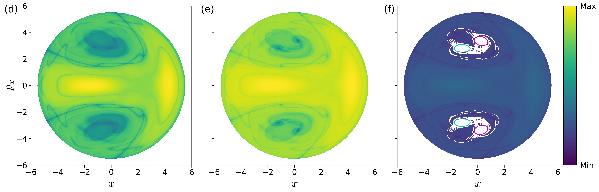
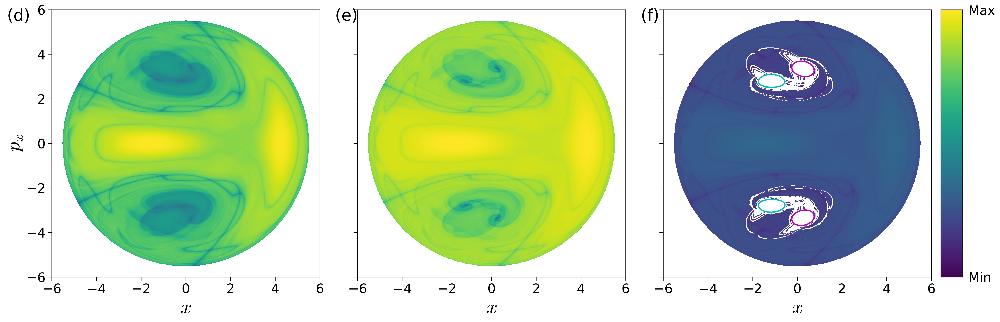

Introduction
It is well-known now that the paradigm of escape from a potential well and the topology of phase space structures that mediate such escape are used in a broad array of problems such as isomerization of molecular clusters {% cite Komatsuzaki2001 --file finding_nhim_2and3dof_nonlinear %}, reaction rates in chemical physics {% cite Komatsuzaki1999 WiWiJaUz2001 --file finding_nhim_2and3dof_nonlinear %}, ionization of a hydrogen atom under electromagnetic field in atomic physics {% cite JaFaUz2000 --file finding_nhim_2and3dof_nonlinear %}, transport of defects in solid state and semiconductor physics {% cite Eckhardt1995 --file finding_nhim_2and3dof_nonlinear %}, buckling modes in structural mechanics {% cite Collins2012 ZhViRo2018 --file finding_nhim_2and3dof_nonlinear %}, ship motion and capsize {% cite Virgin1989 ThDe1996 NaRo2017 --file finding_nhim_2and3dof_nonlinear %}, escape and recapture of comets and asteroids in celestial mechanics {% cite JaRoLoMaFaUz2002 DeJuLoMaPaPrRoTh2005 Ross2003 --file finding_nhim_2and3dof_nonlinear %}, and escape into inflation or re-collapse to singularity in cosmology {% cite DeOliveira2002 --file finding_nhim_2and3dof_nonlinear %}. As such a method that can identify the high dimensional phase space structures using low dimensional surface as probes can aid in quantifying the escape rates. These low dimensional surfaces has been shown to be of as reactive islands in chemical physics and lead to insights into sampling rare transition events {% cite patra_classical-quantum_2015 patra_detecting_2018 --file finding_nhim_2and3dof_nonlinear %}. However, to benchmark the methodology, we first applied it to linear systems where the closed-form analytical expression of the phase space structures is known {% cite naik2019finding --file finding_nhim_2and3dof_nonlinear %}. As the next step, in this chapter, we will focus on nonlinear Hamiltonian systems which have been extensively studied as "built by hand" models of galactic dynamics and for demonstrating quantum dynamical tunneling {% cite barbanis_isolating_1966 brumer_variational_1976 davis_semiclassical_1979 heller_molecular_1980 waite_mode_1981 kosloff_dynamical_1981 contopoulos_simple_1985 founargiotakis_periodic_1989 barbanis_escape_1990 babyuk_hydrodynamic_2003 --file finding_nhim_2and3dof_nonlinear %}. The nonlinear Hamiltonian systems considered here have an underlying Hénon-Heiles type potential with the simplest form of nonlinearity, and show regular, quasi-periodic, and chaotic trajectories along with bifurcations of periodic orbits. A Hénon-Heiles type potential has a well with bottlenecks connecting the region of bounded motion (trapped region) to unbounded motion (escape off to infinity), and have rotational symmetry. In addition, these Hénon-Heiles type potentials are studied as first benchmark nonlinear systems in applying new phase space transport methods to astrophysical and molecular motion. In this chapter, we will present verification of a method that uses trajectory diagnostic on a low dimensional surface for revealing the phase space structures in 4 or more dimensions.
Conservative dynamics on an open potential well has received considerable attention because the phase space structures, normally hyperbolic invariant manifolds (NHIM) and its invariant manifolds, explain the intricate fractal structure of ionization rates {% cite mitchell_geometry_2003_I mitchell_geometry_2003_II mitchell_chaos-induced_2004 --file finding_nhim_2and3dof_nonlinear %}. Furthermore, the discrepancies in observed and predicted ionization rates in atomic systems has also been explained by accounting for the topology of the phase space structures. These have been connected with the breakdown of ergodic assumption that is the basis for using ionization and dissociation rate formulae {% cite de_leon_intramolecular_1981 --file finding_nhim_2and3dof_nonlinear %}. This rich literature on chaotic escape of electrons from atoms sets a precedent for applying new methods for finding NHIM and its invariant manifolds in Hamiltonian with open potential wells {% cite mitchell_analysis_2004 mitchell_chaos-induced_2004 mitchell_nonlinear_2009 mitchell_structure_2007 wang_photoionization_2010 --file finding_nhim_2and3dof_nonlinear %}.
As we noted earlier, trajectory diagnostic methods which can probe phase space to detect the high dimensional invariant manifolds have potential to be of use in many degrees-of-freedom models. One such method is the Lagrangian descriptors (LDs) that can reveal phase space structures by encoding geometric property of trajectories (such as, phase space arc length, configuration space distance or displacement, cumulative action or kinetic energy) initialised on a two dimensional surface {% cite madrid2detect009 mendoza2010 mancho2013 lopesino2017 --file finding_nhim_2and3dof_nonlinear %}. The method was originally developed in the context of Lagrangian transport in time-dependent two dimensional fluid mechanics. However, it has also been successful in locating transition state trajectories in chemical reactions {% cite balibrea2016lagrangian craven2017lagrangian junginger2016lagrangian --file finding_nhim_2and3dof_nonlinear %}. Besides, also being applicable to both Hamiltonian and non-Hamiltonian systems, as well as to systems with arbitrary time-dependence such as stochastic and dissipative forces, and geophysical data from satellite and numerical simulations {% cite amism11 mendoza2014 ggmwm15 lopesino2017 ramos2018 --file finding_nhim_2and3dof_nonlinear %}.
The method of Lagrangian descriptors (LDs) is straightforward to implement computationally and it provides a "high resolution" method for exploring the influence of high dimensional phase space structure on trajectory behaviour. The method of LDs takes an opposite approach to that of classical Lyapunov exponent type calculations by emphasizing the initial conditions of trajectories, rather than their advected locations that is involved in calculating normalized rate of divergence. This is achieved by considering a two dimensional section of the full phase space and discretizing with a dense grid of initial conditions. Even though the trajectories wander off in the phase space, as the initial conditions evolve in time, there is no loss in resolution of the two dimensional section. In contrast to inferring the phase space structures from Poincaré sections, LD plots do not suffer from loss of resolution since the affects of the structure are encoded in the initial conditions and there is no need for the trajectory to return to the section. Our objective is to clarify the use of Lagrangian descriptors as a diagnostic on two dimensional sections of high dimensional phase space structures. This diagnostic is also meant to be used as the preliminary step in computing the NHIM, their stable and unstable manifolds using other computational means {% cite junginger2016transition bardakcioglu2018 ezra_2018 --file finding_nhim_2and3dof_nonlinear %}. In this chapter, we will present the method's capability to detect the high dimensional phase space structures such as the NHIM, their stable, and unstable manifolds in the 2 DoF Barbanis system.
Barbanis 2 DoF Model
[\[sec:model\_prob\_2dof\]]{#sec:model_prob_2dof label="sec:model_prob_2dof"}Model system: coupled harmonic 2 DoF Hamiltonian ----------------------------------------------------------------------------------------------------------------------------- As pointed out in the Introduction, our focus is to adopt a well-understood model system which is a 2 degrees-of-freedom coupled harmonic oscillator with the Hamiltonian $$\begin{aligned} \mathcal{H}(x,y,p_x,p_y) =& T(p_x, p_y) + V_{\rm B}(x,y) \\ =& \frac{1}{2}p_x^2 + \frac{1}{2}p_y^2 + \frac{1}{2}\omega_x^2 x^2 + \frac{1}{2}\omega_y^2 y^2 + \delta x y^2 \end{aligned} \label{eqn:Hamiltonian_Barbanis}$$ where $\omega_x, \omega_y, \delta$ are the harmonic oscillator frequencies of the $x$ and $y$ degree-of-freedom, and the coupling strength, respectively. We will fix the parameters as $\omega_x = 1.0, \omega_y = 1.1, \delta = -0.11$ in this study. The two degrees-of-freedom potential is also referred to as *Barbanis* potential, and has been investigated as a model of galactic motion ({% cite contopoulos1970 barbanis_isolating_1966 --file finding_nhim_2and3dof_nonlinear %}), dynamical tunneling and molecular spectra in physical chemistry ({% cite heller1980 davis1981 martens1987 --file finding_nhim_2and3dof_nonlinear %}), structural mechanics and ship capsize ({% cite ThDe1996 NaRo2017 --file finding_nhim_2and3dof_nonlinear %}). The equilibria of the Hamiltonian vector field are located at $$\left(-\frac{\omega_y^2}{2\delta}, \pm \frac{1}{\sqrt{2}}\frac{\omega_x \omega_y}{\delta}, 0, 0 \right) \qquad \text{and} \qquad \left(0, 0, 0, 0 \right)$$ and are at total energy $E_c = \frac{\omega_x^2 \omega_y^4}{8 \delta^2}$ and $0$ respectively. The energy of the two index-1 saddles (as defined and shown in App. [5.2.1](#ssect:linear){reference-type="ref" reference="ssect:linear"}) located at positive and negative y-coordinates and positive x-coordinate for $\delta < 0$ will be referred to as *critical energy*, $E_c$. In our discussion, we will refer to the total energy of a trajectory or initial condition in terms of the excess energy, $\Delta E = E_c - e$, which can be negative or positive to denote energy below or above the critical energy. For the parameters used in this study, the index-1 saddle equilibrium points are located at $\left( 5.5, \pm 7.071, 0, 0 \right)$ and have energy, $E_c = 15.125$. The contours of the coupled harmonic 2 DoF potential energy function in [\[eqn:Hamiltonian\_Barbanis\]](#eqn:Hamiltonian_Barbanis){reference-type="eqref" reference="eqn:Hamiltonian_Barbanis"} is shown in Fig. [\[fig:pes\_cont\_Barbanis\]](#fig:pes_cont_Barbanis){reference-type="ref" reference="fig:pes_cont_Barbanis"} along with the 3D view of the surface. We note here that the potential has steep walls for $x < 0$ when $\delta < 0$ and steep drop-off beyond the bottlenecks around the index-1 saddles. This leads to unphysical motion in the sense of trajectories approaching $-\infty$ with ever increasing acceleration even for finite values of the configuration space coordinates {% cite brumer_variational_1976 --file finding_nhim_2and3dof_nonlinear %}. In Fig. [\[fig:hills\_region\_Barbanis\]](#fig:hills_region_Barbanis){reference-type="ref" reference="fig:hills_region_Barbanis"} we show the *Hill's region*, as defined in App. [5](#ssect:coupled_2dof){reference-type="ref" reference="ssect:coupled_2dof"}, for the model system [\[eqn:Hamiltonian\_Barbanis\]](#eqn:Hamiltonian_Barbanis){reference-type="eqref" reference="eqn:Hamiltonian_Barbanis"}. It is important to note here that even though Hill's region is shown on the configuration space, it captures the dynamical picture, that is the *phase space perspective*, of the Hamiltonian. This visualization of the energetically accessible and forbidden realm is the first step towards introducing two-dimensional surfaces to explore trajectory behavior. The complete description of the unstable periodic orbit and its invariant manifolds is described in App. [5.1](#ssect:tube_mani){reference-type="ref" reference="ssect:tube_mani"} along with the visualization in the 3D space. {width="30.00000%"}\ {width="25.00000%"}\ {width="40.00000%"} Fig. 1. (a) Potential energy function underlying the coupled harmonic Hamiltonian~\eqref{eqn:Hamiltonian_Barbanis} as isopotential contour and surface. The index-1 saddles are shown as red crosses in both the plots. (b) Hill's region for energy below and above the energy of the index-1 saddle. Parameters used are $\omega_x = 1.0, \omega_y = 1.1, \delta = -0.11$.Since this model system is conservative 2 DoF Hamiltonian, that is the phase space is $\mathbb{R}^4$, the energy surface is three dimensional, the dividing surface is two dimensional, and the normally hyperbolic invariant manifold (NHIM), referred to as the unstable periodic orbit, is one dimensional {% cite wiggins_role_2016 --file finding_nhim_2and3dof_nonlinear %}. Now, if we consider the intersection of a two dimensional surface with the three-dimensional energy surface, we would obtain the one-dimensional energy boundary on the surface of section. We will focus our study by using the isoenergetic two-dimensional surface
$$\begin{aligned} % U_{V, +} &= \left\{(y,p_y) \; | \; x = 0, \; p_x(y,p_y;e) > 0 \right\} , \qquad \text{motion %to the right} \label{eqn:sos_U_Vp} \\ % U_{V, -} &= \left\{(y,p_y) \; | \; x = 0, \; p_x(y,p_y;e) < 0 \right\} , \qquad \text{motion %to the left} \label{eqn:sos_U_Vm} \\ U_{xp_x, +} &= \left\{(x,y,p_x,p_y) \; | \; y = 0, \; p_y(x,y,p_x;e) > 0 \right\} \label{eqn:sos_Uxpx} % U_{H, -} &= \left\{(x,p_x) \; | \; y = 0, \; p_y(x,p_x;e) < 0 \right\} , \qquad \text{motion %to the bottom} \label{eqn:sos_U_Hm} \end{aligned}$$where the sign of the momentum coordinate enforces a directional crossing of the surface. Due to the form of the vector field [eqn:two_dof_Barbanis]{reference-type="eqref" reference="eqn:two_dof_Barbanis"} and choice of $\delta < 0$, this directionality condition implies motion towards positive $y$-coordinate.
In this article, detecting the phase space structures will constitute finding the intersection of the NHIM and its invariant manifolds with a two dimensional surface (for example, Eqn. [eqn:sos_Uxpx]{reference-type="eqref" reference="eqn:sos_Uxpx"}).
Results
We begin by noting that two-dimensional Poincaré surface of section have sufficient dimensionality to capture trajectories on a three dimensional energy surface, however for high dimensional systems trajectories can go "around" the two dimensional surface. One approach available in the literature is to use high dimensional Poincaré sections which can "catch" trajectories but are hard to visualize on paper or in the virtual 3D space. Even when gets around this issue, using suitable projective geometry, the fact that the qualitative analysis based on Poincaré sections depends on trajectories returning to this surface can not be circumvented since trajectories on and inside the spherical cylinders will not return to the Poincaré surface of section.
 {width="80.00000%"}
{width="80.00000%"}
{width="80.00000%"}
{width="80.00000%"}
Fig. 3. Top row: Poincar\'e surface of section, $U_{xp_x}$~\eqref{eqn:sosUxpx}, at excess energy (a) $\Delta E = -0.125$, (b) $\Delta E = 0.000$, (c) $\Delta E = 0.125$ where the intersection of the surface of section with the energy surface is shown in green. Bottom row: Lagrangian descriptor on the surface of section, $U{xp_x}$~\eqref{eqn:sos_Uxpx}, for the excess energies (d) $\Delta E = -0.125$, (e) $\Delta E = 0.000$, (f) $\Delta E = 0.125$ and the integration time $\tau = 50$. The intersection of the surface of section with the cylindrical manifolds of the NHIM \textemdash unstable periodic orbit for this system \textemdash associated with the index-1 saddle equilibrium point in the bottleneck is shown in cyan (stable) and magenta (unstable) curves. The magenta and cyan curves in $p_x > 0$ correspond to the invariant manifolds of unstable periodic orbit at $y > 0$ index-1 saddle, and the ones in $p_x < 0$ correspnd to the invariant manifolds of unstable periodic orbit at $y < 0$ index-1 saddle.
Coupled harmonic 2 DoF system
As discussed in aforementioned literature {% cite madrid2009 lopesino2017 demian2017 --file finding_nhim_2and3dof_nonlinear %}, points with minimum Lagrangian descriptor (LD) values and singularity are on the invariant manifolds. In addition, LD plots show dynamical correspondence with Poincaré sections (in the sense that regions with regular and chaotic dynamics are distinct in both Poincaré section and LD plots) while also depicting the geometry of manifold intersections {% cite demian2017 lopesino2017 garcia-garrido_2018 --file finding_nhim_2and3dof_nonlinear %}. This correspondence in the LD features and Poincaré section is confirmed in Fig. [fig:psect_lag_desc_Barbanis]{reference-type="ref" reference="fig:psect_lag_desc_Barbanis"} where we show the Poincaré surface of section Eqn. [eqn:sos_Uxpx]{reference-type="eqref" reference="eqn:sos_Uxpx"} of trajectories and LD contour maps on the same isoenergetic two-dimensional surface for negative and positive excess energies. It can be seen that the chaotic dynamics as marked by the sea of points in Poincaré section is revealed as the tangle of invariant manifolds which are points of minima and singularity in the LD plots. As shown by the one dimensional slices of the LD plots, there are multiple such minima and singularities and as the excess energy is increased to positive values, there are regions of discontinuities along the one dimensional slice. Next, as the energy is increased and the bottleneck opens at critical energy $E_c$, trajectories that leave the potential well and do not return to the surface of section are not observed on the Poincaré section while the LD contour maps clearly identifies these regions as discontinuities in the LD values. These regions lead to escape because they are inside the cylindrical manifolds of the unstable periodic orbit associated with the index-1 saddle equilibrium point {% cite NaRo2017 --file finding_nhim_2and3dof_nonlinear %}. These regions on the isoenergetic two-dimensional surface are also referred to as reactive islands in chemical reaction dynamics {% cite DeLeon1992 DeMeTo1991 DeMeTo1991a --file finding_nhim_2and3dof_nonlinear %}. The escape regions or reactive islands that appear over the integration time interval can also be identified by using the forward and backward LD contour maps where these regions appear as discontinuities. In Fig. [fig:psect_lag_desc_Barbanis]{reference-type="ref" reference="fig:psect_lag_desc_Barbanis"}(f), we show these for $\Delta E = 0.125$ and $\tau = 50$ along with the intersection of the cylindrical manifolds' intersections that are computed using differential correction and numerical continuation. The detailed comparison and extension to high dimensional systems is not the focus of this study and will be discussed in forthcoming work. Thus LD maps also provide a quick and reliable approach for detecting regions that will lead to escape within the observed time, or in the computational context, the integration time.
To detect the NHIM in this case, unstable periodic orbit associated with the index-1 saddles (marked by cross in Fig. [fig:pes_cont_Barbanis]{reference-type="ref" reference="fig:pes_cont_Barbanis"}), we define an isoenergetic two dimensional surface that is parametrized by the $y$-coordinate and placed near the $x$-coordinate of the saddle equilibrium that has the negative $y$-coordinate. This can be expressed as a parametric two dimensional surface
$$\begin{aligned} % U_{xy}^+ = & \left\{(x,y,p_x,p_y) \; | \; p_x = 0, \; p_y(x,y;e) > 0 \right\}, \\ U_{xp_x}^+(k) = & \left\{(x,y,p_x,p_y) \, | \, y = k, p_y(x,y,p_x;e) > 0 \right\} \label{eqn:sos_xpx_k} % U_{yp_y}^+ = & \left\{(x,y,p_x,p_y) \; | \; x = k_x, \; p_y(x,y,p_x;e) > 0 \right\}, \end{aligned}$$for total energy, $e$, which is above the critical energy, $E_c$, $k$ is the $y$-coordinate. The variable integration time LD contour maps are shown in Fig. [fig:Barbanis2dof_M1500x1500_E15-250]{reference-type="ref" reference="fig:Barbanis2dof_M1500x1500_E15-250"} along with the projection of the low dimensional slices [eqn:sos_xpx_k]{reference-type="eqref" reference="eqn:sos_xpx_k"} in the configuration space and the NHIM. The points on NHIM, which is an unstable periodic orbit for 2 DoF, on this surface is the coordinate with maximum (for variable integration time) LD value. The full visualization of the NHIM as the black ellipse, $\mathbb{S}^1$, is in Fig. [fig:Barbanis2dof_M1500x1500_E15-250]{reference-type="ref" reference="fig:Barbanis2dof_M1500x1500_E15-250"}(d) and has been computed using differential correction and numerical continuation (details in App. 5.1{reference-type="ref" reference="ssect:tube_mani"}) and shows clearly that points on this unstable periodic orbit are detected by the LD contour map.
{width="24.000%"}\  {width="24.000%"}\
{width="24.000%"}\  {width="24.000%"}\ {width="24.000%"}
{width="24.000%"}\ {width="24.000%"}
Fig. 4. Lagrangian descriptor computed for variable integration time on two dimensional slices~\eqref{eqn:sos_xpx_k} near the bottleneck that detect the NHIM and its invariant manifolds associated with the index-1 saddle. The two dimensional surfaces are shown in the top figure in (d) projected as orange lines on the configuration space and the unstable periodic orbit as black line connecting the isopotential contour corresponding to $\Delta E = 0.125$ with the Hill's region shown in grey. The two dimensional slices represent low dimensional probe of the unstable periodic orbit and the movie of a rotating view can be found here.
Conclusions
In this article, we discussed a trajectory diagnostic method as a low dimensional probe of high dimensional invariant manifolds in 2 DoF nonlinear Hamiltonian systems. This trajectory diagnostic --- Lagrangian descriptor (LD) --- can represent a geometric property of interest in a system with escape/transition and features, that is minima or maxima, in its contour map identify points on the high dimensional invariant manifolds.
Comparing the points on the NHIM in 2 DoF system obtained using the LD method with differential correction and numerical continuation, we also verified the method for a nonlinear autonomous system following our previous work on decoupled and coupled 2 DoF linear system {% cite naik2019finding --file finding_nhim_2and3dof_nonlinear %}. The LD method based detection of NHIM is simple to implement and quickly provides a lay of the dynamical land which is a preliminirary step in applying phase space transport to problems in physics and chemistry. This method can also be used to set up starting guess for other numerical procedures which rely on good initial guess or can also be used in conjunction with machine learning methods for rendering the smooth pieces of NHIM {% cite bardakcioglu2018 feldmaier_invariant_2019 --file finding_nhim_2and3dof_nonlinear %}.
References
{% bibliography --file finding_nhim_2and3dof_nonlinear --cited %}